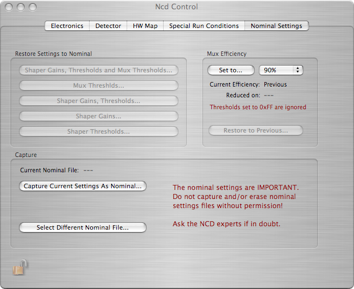
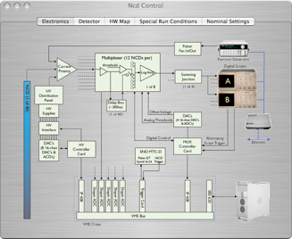
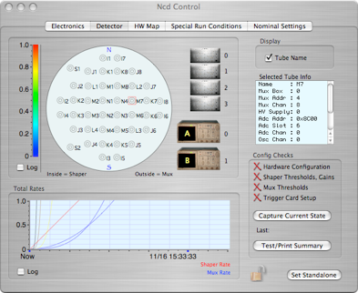
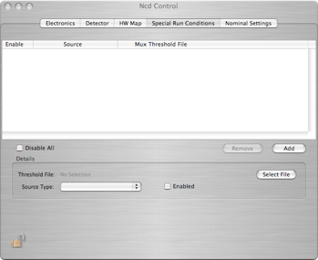
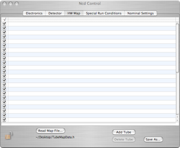
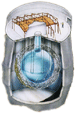

SNO-NCD Experiment






Shops rate of each string for mux and shaper events. Color key can be adjusted by dragging scale and converted from linear to log. Click the mux box or scope to pull up the dialog window for that object.

The main NCD control dialog contains information specific to the SNO-NCD Experiment.

Reference dialog of the electronics
Information for the NCD highlighted in the map to the left
Displays the configuration of the NCD components. If thresholds or settings are changed these checks fail. To capture the current state click the button or have a summary printed to the Status Log
Sets the trigger card to run without the MTC and SHaRC.
Displays a strip chart of the shaper and mux rates over time. Adjust both scales by dragging with the mouse.
Columns display: String#, String Name, AV position, Shaper Address, Card and Channel, Mux Box, Channel and Address (Box), Scope Channel that string is displayed on, HV Supply, Pre-amp for that string, PDS Board and Channel that will send a pulse to the string, Number of Tubes that make up that NCD and names of those tubes. Note: to sort by column click on the column name. Information can be edited in place.
Sets which file will be used as the map. Adds or deletes entire entries. Saves as file. Subject to security lock.
Lists of Mux threshold files that will be loaded for specific source types
Details of the selected file in the list
Add/Remove entries in the list
When checked the file list is totally ignored
Loading Special Mux Thresholds
By using the 'Special Run Conditions' dialog, you can specify special sets of mux thresholds for each type of source run. Just select the type of source and a file. The ascii file format is:
0x10 80 85 77
91 88 78 82
91 76 71 67
89 73 67 86
99 79 76 89
100 59 97 53
100 65 82 79
99 66 84 78
95 68 81 68
90 68 80 60
99 59 74 69
104 75 52 67
16 2 45 49
There should be 13 columns of threshold values (one for each channel) and four rows (one for each mux). You can use either hex or decimal format. The columns can be delimited by any white space.
NCD Tasks
The NCD object manages four tasks.
-
•PDS step thru
-
•Gain and Linearity Calibration
-
•Log Amp Calibration
-
•Threshold Calibration
-
•Cable Check
These tasks are described here.
Record Format
Pulser Record that is shipped when the calibration tasks adjust the pulser settings:
xxxx xxxx xxxx xxxx xxxx xxxx xxxx xxxx Header Word
^^^^ ^^^^ ^^^^ ^^----------------------- NcdModel PulserSetting Record ID (from header)
-----------------^^-^^^^ ^^^^ ^^^^ ^^^^- Length (fixed at 24 bytes)
xxxx xxxx xxxx xxxx xxxx xxxx xxxx xxxx Global Trigger ID
xxxx xxxx xxxx xxxx xxxx xxxx xxxx xxxx Pulser waveform (int)
xxxx xxxx xxxx xxxx xxxx xxxx xxxx xxxx Pulser amplitude (float)
xxxx xxxx xxxx xxxx xxxx xxxx xxxx xxxx Pulser burst rate (float)
xxxx xxxx xxxx xxxx xxxx xxxx xxxx xxxx Pulser width (float)
The NcdModel can also ship task start/stop records:
xxxx xxxx xxxx xxxx xxxx xxxx xxxx xxxx Header Word
^^^^ ^^^^ ^^^^ ^^----------------------- NcdModel TaskName Record ID (from header)
-----------------^^-^^^^ ^^^^ ^^^^ ^^^^- Length (fixed at 24 bytes)
xxxx xxxx xxxx xxxx xxxx xxxx xxxx xxxx Global Trigger ID
xxxx xxxx xxxx xxxx xxxx xxxx xxxx xxxx
--------------------------------------^- 1==Started, 0==Stopped
The NcdModel can also ship task start/stop records:
xxxx xxxx xxxx xxxx xxxx xxxx xxxx xxxx Header Word
^^^^ ^^^^ ^^^^ ^^^^--------------------- NcdModel TaskName Record ID (from header)
--------------------^^^^ ^^^^ ^^^^ ^^^^- Length (fixed at 24 bytes)
xxxx xxxx xxxx xxxx xxxx xxxx xxxx xxxx Global Trigger ID
xxxx xxxx xxxx xxxx xxxx xxxx xxxx xxxx
--------------------------------------^- 1==Started, 0==Stopped
Force settings back to nominal values
Capture the current settings as Nominal and store into a file.
Set all mux values to a percentage of their current value